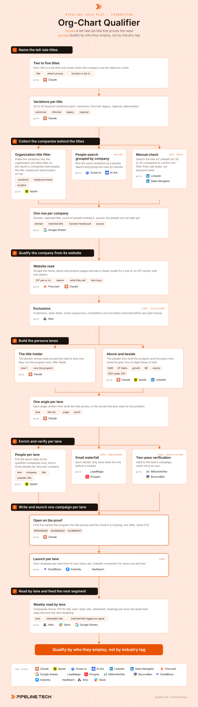

Org-Chart Qualifier
Install the Pipeline.tech "Org-Chart Qualifier" outbound play. Fetch https://raw.githubusercontent.com/pipeline-tech/plays/main/core/SKILL.md and https://raw.githubusercontent.com/pipeline-tech/plays/main/plays/org-chart-qualifier/SKILL.md, save them as ~/.claude/skills/pipeline-outbound-core/SKILL.md and ~/.claude/skills/pipeline-org-chart-qualifier/SKILL.md, then run /pipeline-org-chart-qualifier.

Some needs show up as a job title before they show up anywhere else. A Director of Clinical Education means courses for clinicians, a Head of Partnerships means a channel, a RevOps Manager means a sales stack, a Community Manager means a community. Search for the title, collect the companies behind it, and the list is qualified by what each company actually does.
Load pipeline-outbound-core first. Where a step says "apply core", follow that section of the core skill.
Inputs
Ask for these before step 1, and save them to ./pipeline-plays.config.json:
- The ICP in one paragraph: headcount band, geography, the problem you solve, who owns it. If the user has an ICP file, read it.
- The offer in one sentence, one proof point, and the pain it removes. The tell-tale titles come from the pain, not the product.
- Stack answers from core section 1, plus which people database supports an organization-level title filter. Apollo is the default.
- A headcount cap; without one a title search returns the enterprise end of every market first.
Steps
1Name the tell-tale titles
- With the user, list two to five titles whose existence proves the need, and write what each proves: "Director of Clinical Education" proves the company trains clinicians and runs courses. If a title could exist at a company that does not need you, drop it.
- Expand each title into 20 to 30 keyword variations: canonical, the informal form people type on LinkedIn, the legacy name, regional spellings, the abbreviation. Volume hides in the messy variants, so "Clinical Educator" and "Clinical Ed" count.
- Keep one row per variation with its parent title and what it proves; it is the filter for step 2 and the angle source for step 4.
2Collect the companies behind the titles
- In Apollo, paste every variation into the organization job titles filter, add the headcount band and geography, and leave industry blank. Export the companies, not the people.
- With Ocean.io or AI Ark, run the variations as a people search grouped by domain. Apply core: lists.
- Search the title on LinkedIn by hand for 20 to 30 companies. Under 8 in 10 real seats means the variations are too loose; cut the noisy ones and rerun.
- Write one row per company: domain, matched title, how many people hold it, source. Four clinical educators mean a bigger program than one.
3Qualify the company from its website
- The title proves the need, the website proves the fit. Scrape the home, about and product pages and have a cheap model give a yes or no ICP verdict with one reason. Record what it sells and who buys; step 6 uses both.
- Drop the no's and anything the model could not read.
- Apply core: exclusions. Recruiters surface often in title searches because they list client roles.
4Build the persona lanes
- Lane one is always the title holder. They run the program the title proves, so the angle speaks to it directly: "you run CME courses, need more physicians in them?"
- The other lanes are the people above and beside that seat. For a medical-education title: the CMO, the VP Sales, the director of professional education, field marketing or events, growth, business development, and the CEO under 200 people. Four to eight lanes; stop when a lane would carry the same angle as another.
- Give each lane its own title list with 20 to 30 variations and one angle written from what the tell-tale title proves. Events gets "warm up attendees before your next show".
5Enrich and verify per lane
- Pull the people lane by lane, only at companies that survived step 3, one to three per lane per company, using the decision maker rule by size from core.
- Apply core: enrichment.
- Apply core: verification. Keep the lane on every row; campaigns and the weekly read are split by it.
6Write and launch one campaign per lane
- Apply core: copy and send rules.
- Open on the proof the title gives you: "your clinical education team runs courses for surgeons" is a fact, not a compliment. One offer per lane, a value CTA, and the title itself is the personalization. Never say you looked at their org chart.
- Draft three angle variants for email 1 and one threaded nudge for email 2 per lane. Show them to the user before upload.
- Upload leads per lane with
{PROGRAM},{AUDIENCE},{COMPANY}, scheduled for the next business day. LinkedIn connection on day 1 for lanes one and two.
7Read by lane and feed the next segment
- Weekly: companies found, ICP-fit rate, sent, reply rate, interested rate and meetings, split by lane. A lane under half the best lane's interested rate after two full sends is paused.
- The lanes that reply become the targeting for the next segment: keep them, pick the next tell-tale title in step 1, run again. Log the matched title on the CRM company record as a dated signal of type
employs-titleso later plays can stack it. - Apply core: credits and handoff.
Guardrails
- A title that can exist without the need is not a tell-tale title. "Marketing Manager" proves nothing; "Director of Clinical Education" proves a program.
- Companies first, people second. Pulling people before the website check spends credits on companies that fail the ICP.
- Never mention the title search, the org chart or the person whose seat proved the need. The copy speaks to the program.
- One lane per person; someone who fits two goes into the more senior one. Do not run this play and a cold industry play on the same domain in the same month.
- Recruiters and staffing firms are the most common false positive in a title search; remove them before enrichment.
Example run
User: "/pipeline-org-chart-qualifier for our outbound agency, offer is physician outreach for companies that run accredited education, ICP is US manufacturers 51 to 2000 people that sell to clinicians"
- Named three tell-tale titles (Medical Education, Clinical Education, CME), expanded to 74 variations.
- Apollo returned 2,140 people at 486 companies; Ocean.io added 63 domains after dedupe. LinkedIn spot check on 30 companies confirmed 27 real seats.
- Website read gave 312 ICP yes out of 549; 19 removed under exclusions, mostly recruiters. 293 companies qualified.
- Eight lanes: clinical education, marketing, sales, growth, business development, product marketing, events, CEO under 200 people.
- 1,960 people pulled, 1,410 verified valid, 96 catch-all in their own campaigns, 454 flagged with no email and kept.
- Eight campaigns created, copy approved, scheduled for Monday from separate inbox sets.
- Week one: clinical education lane 4.1% interested, events 2.8%, product marketing 0.6% and paused. Matched title logged on 293 company records.